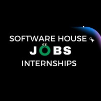

About Our Internship Program
Our remote internship program is tailored for aspiring developers and tech enthusiasts eager to step into the world of software engineering. Hosted by a high-tech software house, the program offers hands-on experience with real industry tools, frameworks, and agile workflows used in professional development teams.
Interns work on live projects such as web applications, APIs, and cloud-based platforms, collaborating with experienced engineers, designers, and product managers. Each intern is assigned a technical mentor who provides regular code reviews, guidance, and career insights to accelerate their growth.
In addition to technical training, the program includes weekly sessions on Git/GitHub, DevOps basics, testing practices, and modern JavaScript frameworks like React or Vue.js. Interns build a solid portfolio of work that reflects their abilities and understanding of real-world development processes.
Whether you're aiming for a career in full-stack development, backend systems, or UI/UX, this internship sets the foundation by simulating the culture and pace of a fast-moving software house. By the end of the program, interns graduate with confidence, connections, and real project experience that employers value.
